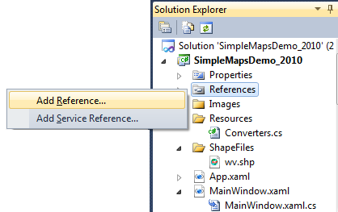
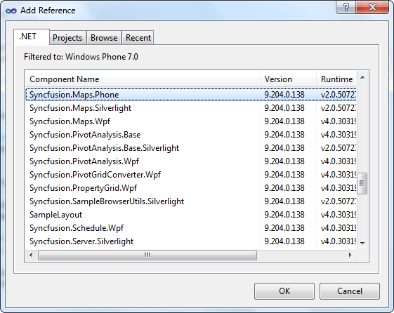

Deployment Requirements
When deploying an application that references Syncfusion Essential Maps for Phone assembly, the following dependencies must be included in the distribution:
· Syncfusion.Maps.Phone.dll
· Microsoft.Phone.dll
Default Deployment Pattern
The following steps are involved to deploy Essential Maps for Windows Phone from GlobalAssemblyCache (GAC).
9. In Visual Studio, on Solution Explorer, right-click References and select Add Reference.

Figure 7: Adding Reference in Visual Studio
10. The Add Reference window will open.

Figure 8: The Add Reference Window
11. Select the .Net tab. Now a list of assemblies will be displayed, which is available in GAC.
12. Then select Syncfusion.Maps.Phone.dll.
Fast Deployment Pattern
In Visual Studio Integrated Development Environment (IDE), at Solution Explorer, right click the bin folder and add the Syncfusion.Maps.Phone from the following location:
[Root Folder]:\Program Files\Syncfusion\Essential Studio\[Version number]\Assemblies\4.0
Then, add the reference of Syncfusion.Maps.Phone.dll from the bin folder.
Partial/Medium Trust Support
Partial deployment is not supported.